第三组中心两帧：只增加 neck 与肩峰自动点
cam3 · 19.416 s / cam4 · 19.407 s。头部几何限制关闭；同一批预测、原始网格、标定、原有先验与接缝流程。
左右肩峰置信度均低于原门槛 0.3。本次是保留低置信点并按分数平方降权的诊断实验，不代表新增了可靠可见点。严格沿用 0.3 门槛将退化为已有 neck-only 方案。
只加 neck 与低置信肩峰未解决中心两帧的头部外扩。共同身体自动点误差降低，但手部误差未改善，局部交叉检查变差；本实验不替换默认流程。
实验报告 · 逐阶段数据 · CSV · 离线网页 · 结果包 · 重载与输入核验
| 方案 | 身体 RMSE / 22 点 | 手部 RMSE / 84 点 | 局部交叉检查通过 |
|---|
| 原流程 | 13.71 px | 9.34 px | 1 / 2 |
| 仅 neck（既有对照） | 11.57 px | 8.60 px | 0 / 2 |
| neck + 左右肩峰（本次） | 10.88 px | 9.41 px | 0 / 2 |
RMSE 参考同一批 Sapiens2 / WiLoR 自动点，非人工真值。新增三点另报误差，不混入共同评估目标。头部入图顶点数仅为几何诊断，不能当作可见面积。
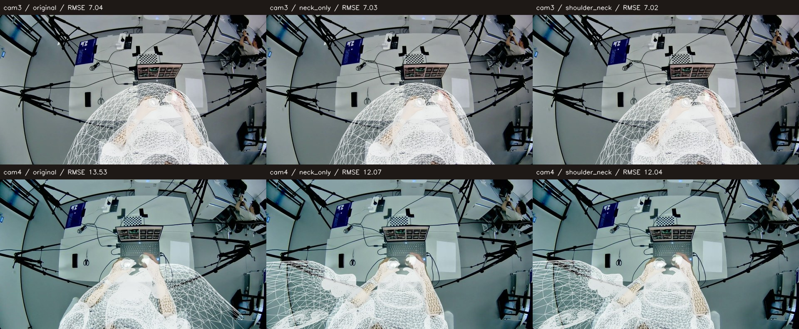
身体优化阶段：原流程 / 仅 neck / neck + 肩峰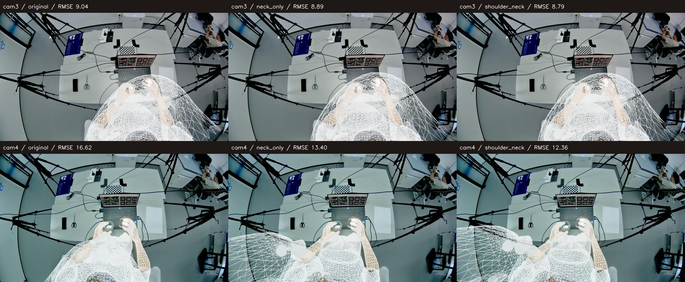
最终融合：原流程 / 仅 neck / neck + 肩峰cam4 · 19.407 s
加入neck后外扩从右侧转到左侧，加入肩峰也未消除；最终身体自动点RMSE降低，但不能据此判定三维几何更准确。左腕局部交叉原流程0、neck-only 3、本次16，右侧均0。
EgoSMPLX 原始预测
 原流程：身体 244.72 px；neck 162.32 px；头部入图顶点 0
原流程：身体 244.72 px；neck 162.32 px；头部入图顶点 0 仅 neck（既有对照）：身体 244.72 px；neck 162.32 px；头部入图顶点 0
仅 neck（既有对照）：身体 244.72 px；neck 162.32 px；头部入图顶点 0 neck + 左右肩峰（本次）：身体 244.72 px；neck 162.32 px；头部入图顶点 0
neck + 左右肩峰（本次）：身体 244.72 px；neck 162.32 px；头部入图顶点 0刚体校正
 原流程：身体 53.63 px；neck 117.45 px；头部入图顶点 0
原流程：身体 53.63 px；neck 117.45 px；头部入图顶点 0 仅 neck（既有对照）：身体 53.63 px；neck 117.45 px；头部入图顶点 0
仅 neck（既有对照）：身体 53.63 px；neck 117.45 px；头部入图顶点 0 neck + 左右肩峰（本次）：身体 53.63 px；neck 117.45 px；头部入图顶点 0
neck + 左右肩峰（本次）：身体 53.63 px；neck 117.45 px；头部入图顶点 0Sapiens2 身体姿态优化
 原流程：身体 13.53 px；neck 69.55 px；头部入图顶点 2416
原流程：身体 13.53 px；neck 69.55 px；头部入图顶点 2416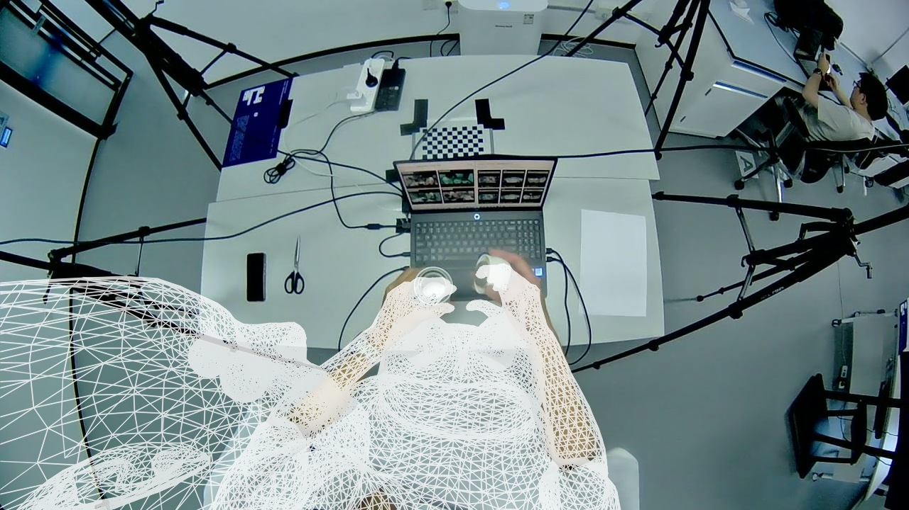
仅 neck（既有对照）：身体 12.07 px；neck 24.89 px；头部入图顶点 2364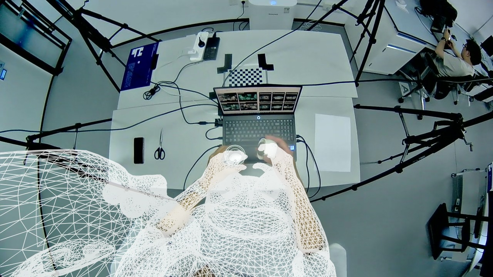
neck + 左右肩峰（本次）：身体 12.04 px；neck 24.69 px；头部入图顶点 2378腕部优化
 原流程：身体 15.01 px；neck 61.76 px；头部入图顶点 2592
原流程：身体 15.01 px；neck 61.76 px；头部入图顶点 2592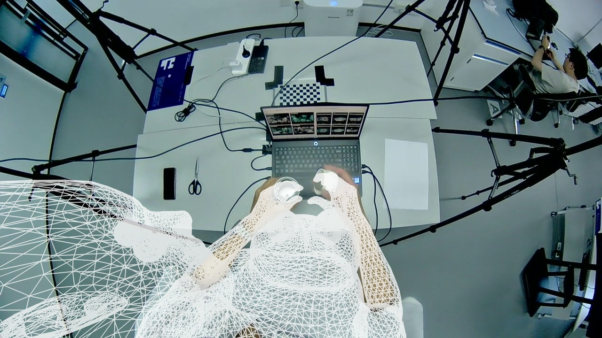
仅 neck（既有对照）：身体 13.36 px；neck 17.52 px；头部入图顶点 2322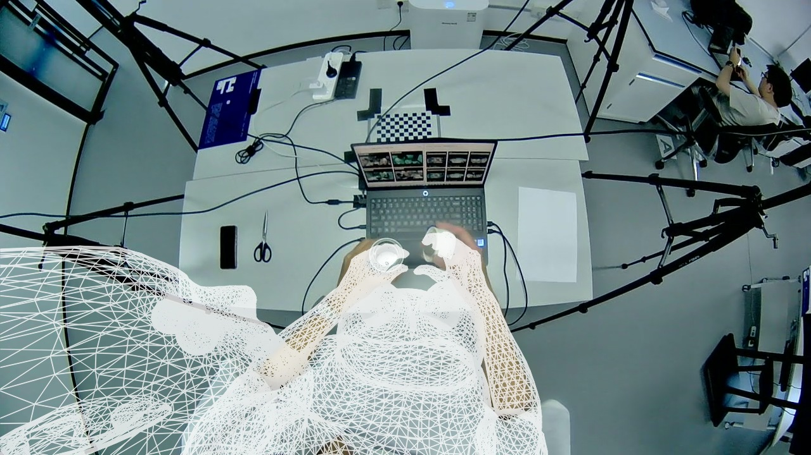
neck + 左右肩峰（本次）：身体 13.10 px；neck 19.09 px；头部入图顶点 2283轮廓优化
 原流程：身体 16.14 px；neck 52.19 px；头部入图顶点 2556
原流程：身体 16.14 px；neck 52.19 px；头部入图顶点 2556 仅 neck（既有对照）：身体 12.97 px；neck 17.70 px；头部入图顶点 2274
仅 neck（既有对照）：身体 12.97 px；neck 17.70 px；头部入图顶点 2274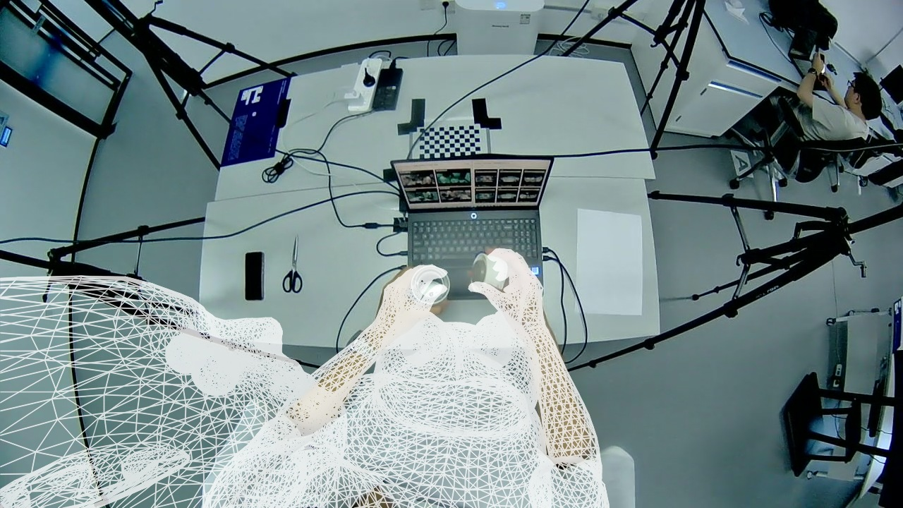
neck + 左右肩峰（本次）：身体 13.31 px；neck 19.21 px；头部入图顶点 2270MANO 辅助身体
 原流程：身体 16.62 px；neck 44.56 px；头部入图顶点 1873
原流程：身体 16.62 px；neck 44.56 px；头部入图顶点 1873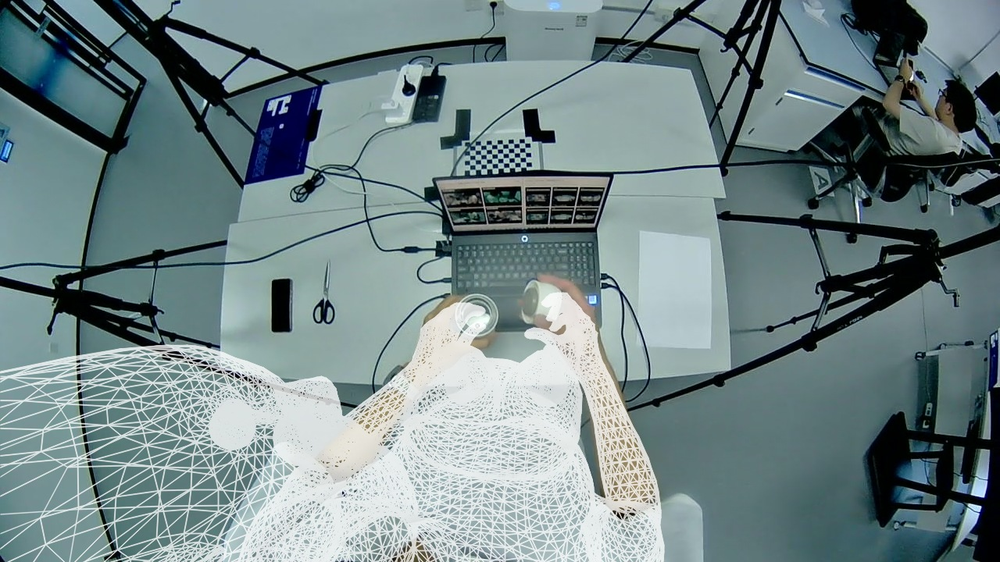
仅 neck（既有对照）：身体 13.40 px；neck 16.23 px；头部入图顶点 1855neck + 左右肩峰（本次）：身体 12.36 px；neck 15.88 px；头部入图顶点 2011原接缝融合结果
 原流程：身体 16.62 px；neck 44.56 px；头部入图顶点 1873
原流程：身体 16.62 px；neck 44.56 px；头部入图顶点 1873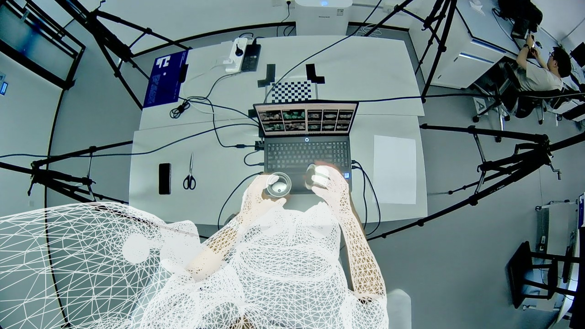
仅 neck（既有对照）：身体 13.40 px；neck 16.23 px；头部入图顶点 1855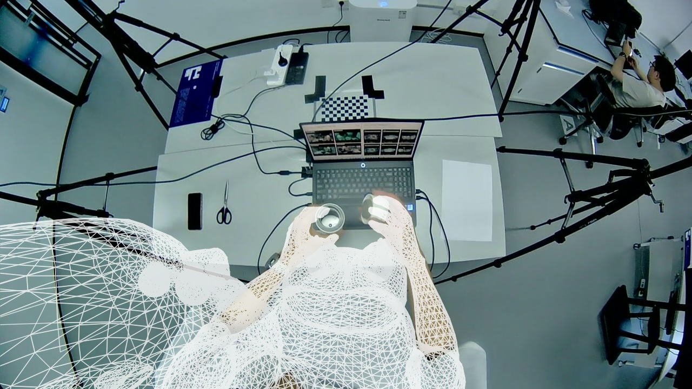
neck + 左右肩峰（本次）：身体 12.36 px；neck 15.88 px；头部入图顶点 2011同一区域手部放大
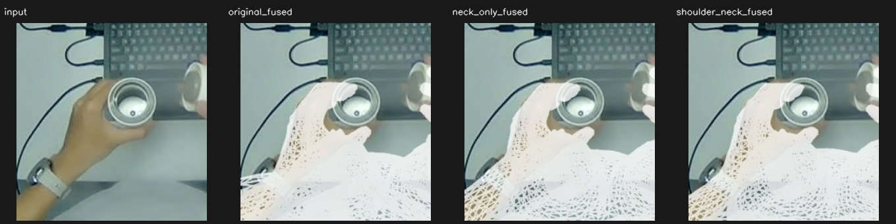
left：原图 / 原流程 / 仅 neck / neck + 肩峰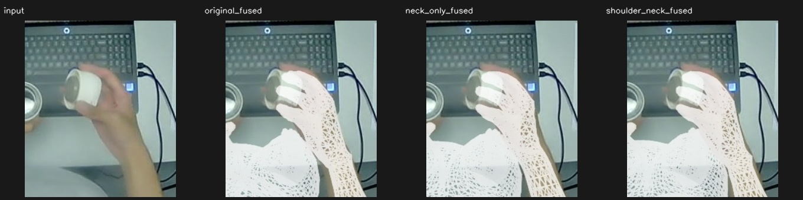
right：原图 / 原流程 / 仅 neck / neck + 肩峰新增点与模型对应
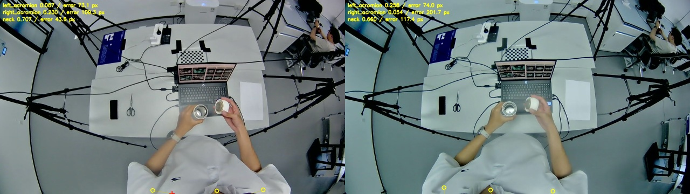
黄色圆圈：自动点；红色十字：刚体模型对应点。部分模型点位于画面外。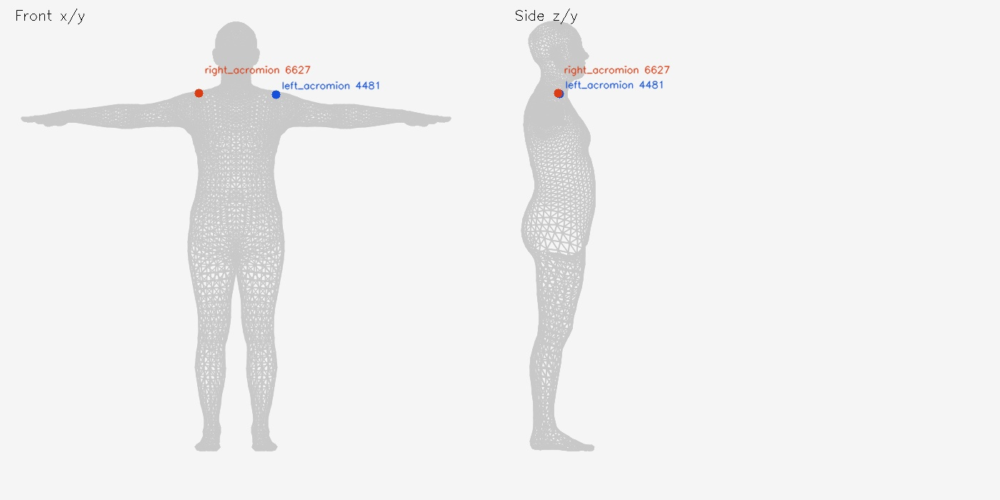
固定肩部表面对应：左 4481，右 6627；neck 沿用内部颈关节代理。肩峰对应参考 MoSh++ 肩部表面标记，并非已经证实与 Sapiens2 标注定义完全相同。没有按当前两帧图像手工选择模型顶点。
回退 checkpoint：ab64d8c；本次代码：97979cefc6841f92d3412b986b7d52253cf517f7。实验分支保留，原默认流程不变。